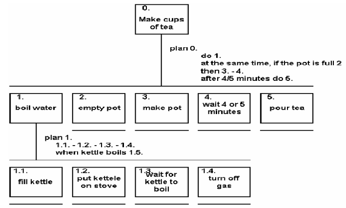

Pendahuluan
Analisis Tugas
Analisis tugas (Task Analysis) = ...
Contoh : apa saja tugas
yang harus dilakukan dalam membersihkan rumah.
Proses untuk
menganalisis pekerjaan cara manusia, melakukan pekerjaannya ...
Keluaran
Hal-hal yang mereka gunakan, rencanakan, dan urutan tindakan yang
biasa dilakukan untuk menyelesaikan tugas tergantung pada teknik yang
digunakan.
Mengapa perlu Analisis Tugas?
Untuk memasukkan elemen manusia secara langsung pada perancangan
secara sistematis dan terbuka sehingga dapat diperiksa secara teliti.
Istilah-istilah dalam analisis tugas:
- Sasaran (external task)
- Tugas (Internal Task)
- Aksi (action)
- Rencana (method)
TEKNIK ANALISA TUGAS
Perbedaan antara teknik analisis tugas dan teknik yang lain adalah
bahwa teknik analisis tugas memiliki ruang lingkup yang luas. Selain
meliputi tugas-tugas yang melibatkan penggunaan komputer, analisis
tugas juga memodelkan aspek-aspek dunia nyata baik yang menjadi bagian
maupun tidak menjadi bagian sistem komputer.
Teknik analisis tugas dibagi menjadi tiga bagian :
- Dekomposisi tugas
- Analisis berbasis pengetahuan
- Teknik berbasis relasi entitas
Analisa tugas berkaitan dengan sistem dan prosedur yang telah ada, dan
alat utama yang digunakan adalah observasi dalam berbagai format.
Salah satu tujuan analisis tugas adalah membantu pembuatan materi
pelatihan dan dokumentasi lainnya. Pada saat dibutuhkan sistem baru,
analisis tugas memberikan kontribusi pada proses identifikasi
kebutuhan sistem. Dalam hal ini, analisis tugas memperjelas dan
mengorganisasikan pengetahuan mengenai keadaan saat ini. Dikaitkan
dengan proses perancangan, analisis tugas termasuk dalam tahap awal
pengidentifikasian kebutuhan, sedangkan model kognitif umumnya
digunakan pada saat-saat akhir selama evaluasi
